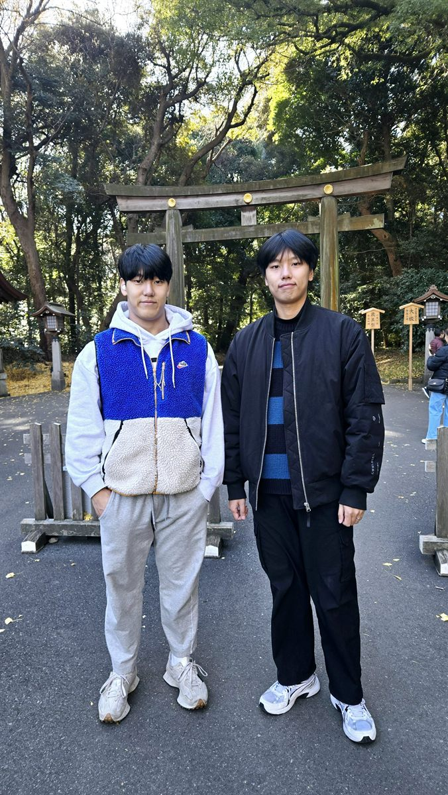
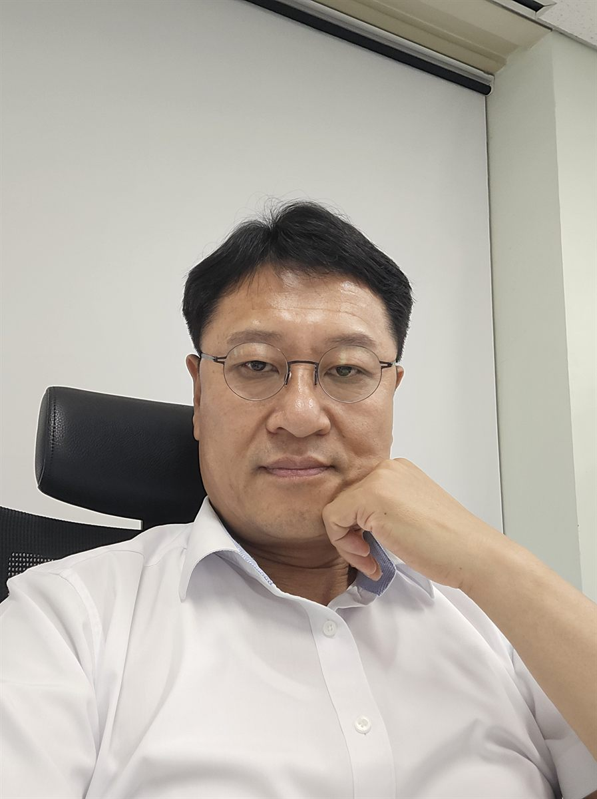
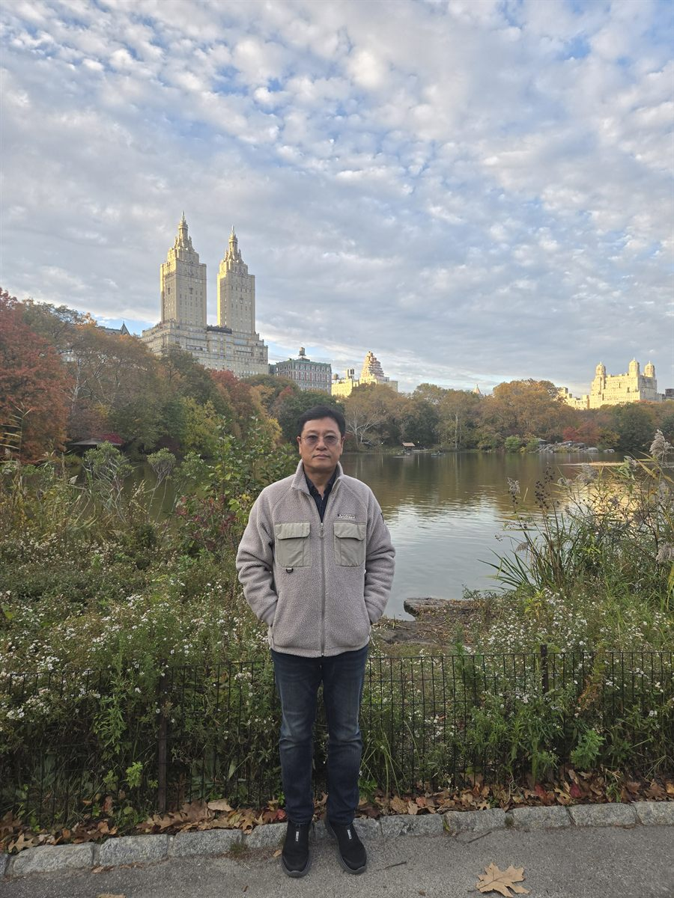
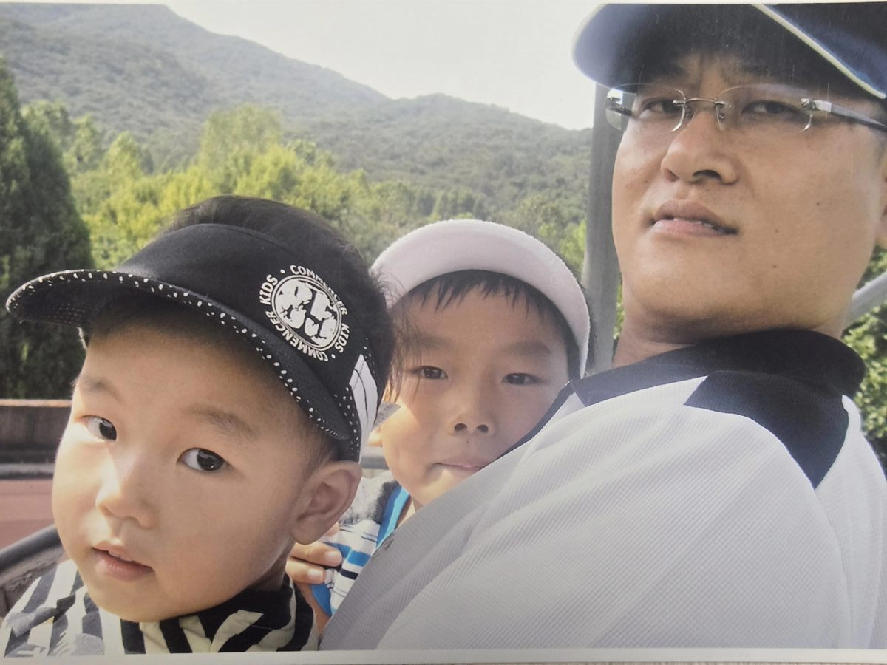
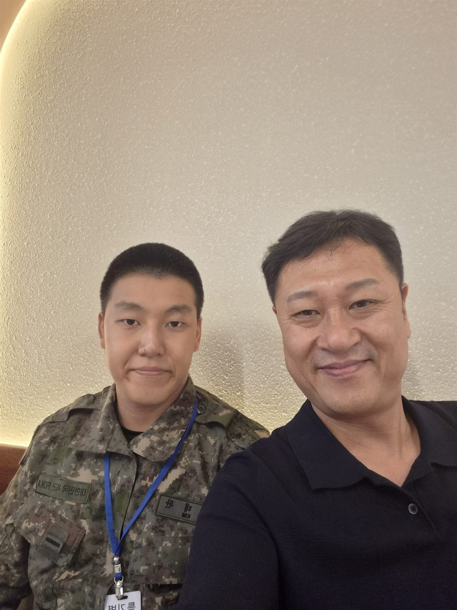

INTRO소개
50대가 되어 인생의 두 번째 장을 준비하고 있습니다. 무엇을 할지 정해 두기보다, 일단 해보면서 길을 찾아가는 중이에요.
AI 덕분에 예전엔 엄두도 못 냈던 일을 하나씩 해볼 수 있게 됐습니다. 이 홈페이지도 그 첫걸음이에요.
NOW요즘 하는 일
AI에게 묻고, 만들어 보고, 배워 가는 중입니다. 해본 일들은 이 페이지에 차곡차곡 쌓아 갈게요.
- AI 배우기
- 내 홈페이지 만들기
- 새로운 도전